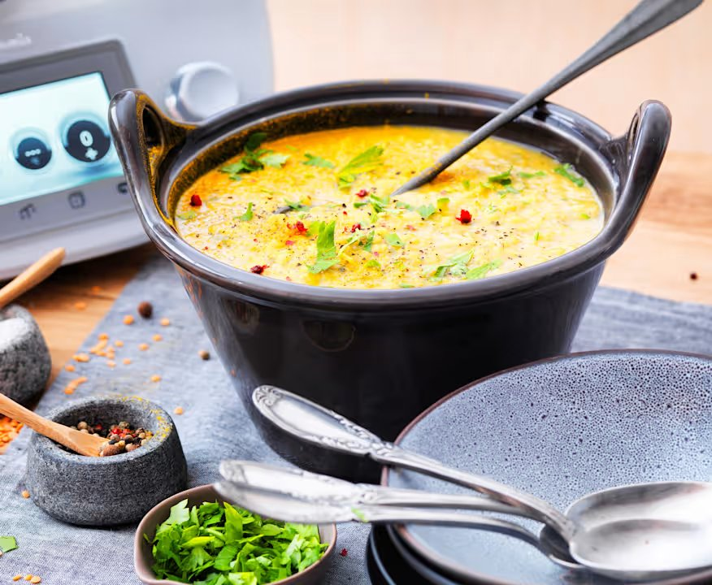

Soupe de lentilles corail
Ingredients
4×
- 20 -25g de persil
- 100 g d'oignon
- 20 g d'huile de tournesol
- 1 à 1,5 cac de cumin
- 1 c. à c. de curcuma
- 1.1 l d'eau
- 2 c. à c. de fond de volaille
- 300 g de lentilles corail

Préparation
Étape 1
Hacher 20 -25g de persil 4 sec/vitesse 6. Réserver 1 cac pour la finition. Ajouter 100 g d'oignon et hacher 5 sec/vitesse 5.
Étape 2
Ajouter 20 g d'huile de tournesol, 1 à 1,5 cac de cumin et 1 c. à c. de curcuma. Rissoler 5 min/120ºC/vitesse 1, sans le gobelet.
Étape 3
Ajouter 1.1 l d'eau, 2 c. à c. de fond de volaille et 300 g de lentilles corail. Cuire 20-25 min/98ºC/sens inverse/vitesse 1.5, avec le panier cuisson sur le couvercle à la place du gobelet.
Étape 4
Servir parsemé du persil réservé.
Conseils
- Remplacer le fond de volaille par 2 cubes de bouillon de poule, ou par un bouillon de légumes pour une version végétarienne.